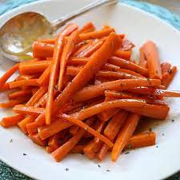

Glazed carrots

Description
Glazed carrot sticks coated in a mixture of brown sugar and butter are a versatile side dish you can serve alongside a weeknight meatloaf, a Sunday ham, or your Thanksgiving turkey. These caramelized carrots are a definite kid-pleaser but they're elegant enough to impress the adults as well!
Ingredients
- Carrots
- Butter
- Brown sugar
- Seasonings
Steps
- Cook the carrots: Place the peeled and cut carrots in a saucepan, cover with water, and bring to a boil. Reduce the heat and simmer until the carrots are tender. Drain.
- Glaze the carrots: Melt the butter in a saucepan, then add the sugar, salt, and pepper. Add carrots and toss until well-coated.